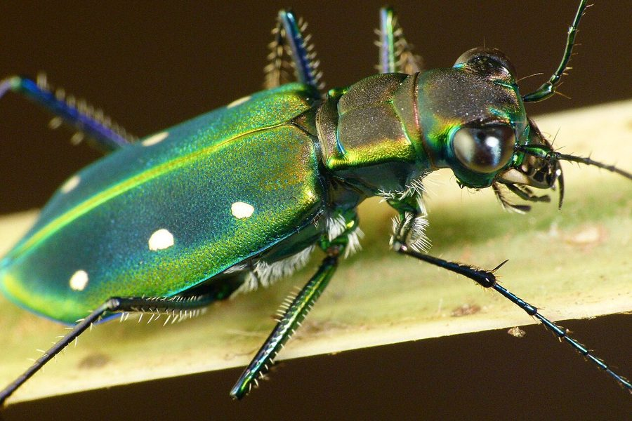

पीली-चित्तीदार बाघ भृंगYellow-spotted Tiger Beetle
Cicindela flavomaculata · Carabidae · INS-0238

- Scientific name वैज्ञानिक नाम
- Cicindela flavomaculata Hope, 1831
- Family कुल
- Carabidae
- Hindi हिंदी
- पीली-चित्तीदार बाघ भृंग
- Local names स्थानीय नाम
- yellow-spotted tiger beetle, peeli-chittidar bagh bhrung, cicindela flavomaculata, yellow spotted tiger beetle
- Status here यहाँ की स्थिति
- native
- Movement आवागमन
- Resident, here all year
- Known from कहाँ दर्ज
- Others have published records from the wider Awadh–Purvanchal plain, none yet from Basti–Ayodhya अवध–पूर्वांचल से दूसरों के प्रकाशित अभिलेख, बस्ती–अयोध्या से अभी नहीं
- IUCN IUCN
- not evaluated
- Review समीक्षा
- not yet reviewed
When to look कब देखें
Present all year. साल भर मौजूद।
Tell it apart from इनसे अलग पहचानें
पीली-चित्तीदार बाघ भृंग / Yellow-spotted Tiger Beetle
Cicindela flavomaculata Hope, 1831 — Carabidae
पीली-चित्तीदार बाघ भृंग — नदियों के रेतीले और कंकरीले किनारों पर धूप में पाया जाने वाला एक मध्यम आकार का फुर्तीला शिकारी कीड़ा। इसके गहरे तांबई-काले पंखों पर चमकीले पीले रंग के गोल धब्बे और लहरदार निशान होते हैं। जब सूरज की तेज धूप रेत को गर्म करती है, तब यह बहुत तेजी से दौड़कर नन्हे कीड़ों को पकड़ता है और जरा सी आहट पर उड़ जाता है।
Quick Identification त्वरित पहचान
| Feature | Description |
|---|---|
| Habit | Medium-sized, active predatory ground beetle inhabiting sandy shores |
| Coloration | Dark bronze or blackish-coppery above with metallic reflections |
| Elytral pattern | Marked with prominent rounded bright yellow spots and short bands |
| Mandibles | Sharp, curved, equipped with acute teeth for gripping prey |
| Eyes | Large and globular, providing expansive panoramic vision |
Field tip: Walk along sandy shores of river channels at mid-morning, looking for small metallic beetles sprinting over the dry sand and flying ahead in short leaps.
हिंदी — कैसे पहचानें: कत्थई-तांबई पंखों पर चमकीले पीले गोल धब्बे, धूप में रेत पर बहुत तेज दौड़ना, और आहट मिलते ही उड़ जाना।
Morphology आकारिकी
Adult description: Slender and well-proportioned. Head metallic bronze or coppery-green, finely striate longitudinally between the prominent eyes. Labrum transverse, ivory-yellow with dark anterior teeth. Mandibles long, sickle-curved, pale testaceous externally with sharp dark denticles. Pronotum subquadrate, slightly rounded laterally, transversely rugose with metallic coppery lustre.
Elytra: Oblong, densely punctate-granulate, dark bronze to brownish-black. Marked with bold sulphur-yellow or ochreous-yellow maculations: a distinct humeral patch, a round subhumeral spot, a transverse or slightly sinuate median band, and a broad apical lunule.
Venter & Appendages: Beneath metallic blue-green, clothed with white pubescences; legs elongate, coppery-bronze with spinose tibiae and tarsi adapted for sprinting over loose sand.
हिंदी: इसके पंखों पर गंधक जैसे चमकीले पीले धब्बे होते हैं। इसके जबड़े मुड़े हुए और बहुत नुकीले होते हैं। टांगें लंबी और पतली होती हैं।
Behaviour & Ecology व्यवहार और पारिस्थितिकी
Cicindela flavomaculata is diurnal and heliophilous, depending on direct solar radiation to achieve the thoracic temperature needed for rapid sprinting.
It hunts by scanning open sand surfaces. When a small insect crosses its field of vision, the beetle charges in a fraction of a second, seizes the prey in its toothed mandibles, and chews it thoroughly. When disturbed, it takes flight instantly, flying four to eight metres in an arc before settling back onto the sand facing the pursuer.
Larvae dwell in vertical burrows in dry or slightly damp sandy substrates, maintaining the burrow mouth level with the sand surface and snapping at passing invertebrates.
हिंदी: यह कीड़ा केवल धूप में शिकार करता है। यह रेत पर दौड़ता है और शिकार दिखते ही झपट पड़ता है। कोई इसके पास आए तो यह उड़कर थोड़ी दूर जाकर मुड़कर बैठ जाता है।
Life Cycle / Phenology जीवन चक्र
| Season / Month | Stage & Activity |
|---|---|
| April–May (Summer) | Adults emerge on exposed sandy shores as temperatures climb |
| June–July (Monsoon) | Mating pairs observed on sandbars; females oviposit into moist sand |
| August–September | Larvae feed actively in vertical burrows constructed in sandy banks |
| October–November | Larvae complete growth before autumn cooling; some adults remain active |
| December–March (Winter) | Overwintering primarily as mature grubs in deep underground chambers |
The life history is univoltine, closely synchronized with the hydrological flood rhythms of the Gangetic river network.
हिंदी: गर्मियों में यह नदी किनारे सक्रिय होता है। बरसात शुरू होते ही मादा रेत में अंडे देती है। इसके बच्चे रेत में बने बिल में रहते हैं और जाड़ा जमीन में बिताते हैं।
Host Plants or Prey आहार
- Adult Prey: Small cursorial insects including shore flies, small ground beetles, ants, and leafhopper nymphs.
- Larval Prey: Surface-crawling ants, beetles, and small riparian invertebrates falling into the burrow vicinity.
- Vegetative Associations: Strictly predatory and non-herbivorous; uses sparse riparian grasses solely for wind protection.
हिंदी: यह पूरी तरह से मांसाहारी है। यह रेत पर चलने वाले नन्हे कीड़ों, चींटियों और मक्खियों को खाता है।
Predators / Natural Enemies शत्रु
- Shorebirds: Sandpipers, wagtails, and plovers forage along sandbars, taking adults.
- Predatory Invertebrates: Asilid robber flies take flying adults; wolf spiders attack resting beetles.
- Subterranean Parasitoids: Tiphiid wasps parasitize grubs inside sandy burrows.
हिंदी: नदी किनारे की चिड़ियां, शिकारी मक्खियां और बड़ी मकड़ियां इनका शिकार करती हैं।
Agricultural / Human Relevance कृषि प्रासंगिकता
- Beneficial predator: Suppresses shore-breeding and floodplain insect pests naturally.
- Ecological indicator: Highly sensitive to river sand extraction, water pollution, and riparian habitat alteration.
- Natural history subject: A captivating example of predatory beetle behavior for natural history education.
हिंदी: यह नदी के किनारे हानिकारक कीड़ों को खाकर पर्यावरण संतुलन बनाए रखता है। रेत खनन होने पर यह इलाका छोड़ देता है।
Expected Locally स्थानीय रूप से अपेक्षित
Not a field record. Written from published accounts for eastern Uttar Pradesh. No confirmed local sighting yet — if you have seen it, that is what the atlas needs.
अभी तक स्थानीय पुष्टि नहीं। यह विवरण प्रकाशित स्रोतों से है, किसी अवलोकन से नहीं।
Expected along the sandy shores, gravel bars, and floodplain margins of the Ghaghara, Rapti, and Kuwana rivers in Basti, Ayodhya, and Sant Kabir Nagar. GBIF holds published records from the wider Awadh–Purvanchal plain, none yet from Basti–Ayodhya. A first local record would be a photograph of an adult on sand showing the bright yellow elytral spots, submitted through the About page.
Distribution वितरण
Global range: Native across South Asia, from northern India and Nepal to Bangladesh.
In India: Recorded throughout the Indo-Gangetic plain, northern river systems, and sub-Himalayan valleys (Fowler 1912).
In Uttar Pradesh: Distributed along sandy river corridors across the state.
In Basti district / eastern UP: Expected along the Ghaghara and Kuwana river sand deposits.
हिंदी: यह भृंग भारत और नेपाल की नदियों की रेती में पाया जाता है। उत्तर प्रदेश की प्रमुख नदियों के किनारों पर यह मौजूद है।
Research Questions शोध प्रश्न
- How does seasonal river sand quarrying in Basti alter Cicindela flavomaculata population density? / बस्ती में नदियों से रेत निकालने का इस भृंग की संख्या पर क्या असर पड़ता है?
- What are the primary prey species captured along the Ghaghara riverbed? / घाघरा के रेतीले किनारों पर यह भृंग मुख्य रूप से किन कीड़ों को खाता है?
- What is the flight escape distance triggered by approaching human observers? / इंसान के पास आने पर यह कीड़ा कितनी दूरी तक उड़कर भागता है?
- How do larval grubs survive temporary inundation during sudden monsoon river rises? / बरसात में नदी का पानी अचानक बढ़ने पर इसके बच्चे बिल में कैसे सुरक्षित रहते हैं?
- Can village children detect the bright yellow spots on its back against coarse river sand? / क्या ग्रामीण बच्चे खुरदरी रेत पर इस कीड़े की चमकीली पीली बिंदियां आसानी से देख सकते हैं?
Similar Species मिलती-जुलती प्रजातियाँ
| Species | How to tell apart | हिंदी |
|---|---|---|
| Angulate Tiger Beetle (Cicindela angulata) | Markings form continuous angular bands rather than rounded discrete spots | धब्बों की जगह मुड़ी हुई सफेद कोणीय धारियां |
| Eight-spotted Tiger Beetle (Cicindela octonotata) | Much larger; bright blue-green metallic sheen with eight spots | बहुत बड़ा आकार (20-24 मिमी), नीला-हरा रंग |
| Two-coloured Tiger Beetle (Cicindela bicolor) | Elytra completely unspotted, uniform dark blue; head and thorax coppery | पंखों पर कोई धब्बा नहीं, सिर तांबई और पंख नीले |
Field rule: A medium-sized bronze tiger beetle on river sand with prominent discrete bright yellow rounded spots and a short middle band identifies Cicindela flavomaculata.
Taxonomy & Classification वर्गीकरण
Original description. Described by Frederick William Hope in 1831 as Cicindela flavomaculata in The Zoological Miscellany, 1, pp. 21–32.
Subspecies. Monotypic across northern India; recognized without named subspecies divisions.
Family and order placement. Placed in the ground beetle family Carabidae, subfamily Cicindelinae, in the order Coleoptera.
IUCN status rationale. Not evaluated on the IUCN Red List; widely distributed along river corridors throughout northern South Asia.
हिंदी: फ्रेडरिक विलियम होप ने 1831 में इसका पहला वैज्ञानिक विवरण दिया था। यह कैराबिडी कुल का सदस्य है।
Photo Gallery फोटो गैलरी
No photos yet — add field photos to media/species/yellow_spotted_tiger_beetle/ and run node scripts/sync_photos.js.
Photos needed आवश्यक फोटो
- [ ] Adult hunting on river sand in bright sun (धूप में रेत पर शिकार करता भृंग)
- [ ] Close-up of yellow spots on bronze elytra (पंखों के पीले धब्बों का क्लोज-अप)
- [ ] Specimen landing after flight on sandbank (उड़ान के बाद रेत पर बैठा कीड़ा)
References संदर्भ
- Hope, F.W. (1831). Synopsis of the new species of Nepaul insects in the collection of Major General Hardwicke. The Zoological Miscellany, 1, pp. 21–32.
- Fowler, W.W. (1912). The Fauna of British India, including Ceylon and Burma: Coleoptera: General Introduction and Cicindelidae and Paussidae, p. 382. Taylor and Francis, London.
- Acciavatti, R.E. & Pearson, D.L. (1989). The tiger beetle genus Cicindela (sensu lato) of India and adjacent regions. Annals of Carnegie Museum, 58, vol. 58.
- Pearson, D.L., Wiesner, J., Acciavatti, R.E., Uniyal, V.P. & Anichtchenko, A. (2020). A Field Guide to the Tiger Beetles of India: Identification and Biology of the Cicindelidae. Bishen Singh Mahendra Pal Singh, Dehradun.
- Andrewes, H.E. (1930). Catalogue of Indian Insects: Part 18, Carabidae. Government of India, Calcutta.
- GBIF Occurrence Data — Cicindela flavomaculata Hope, 1831, India (2025).
Source file: species/fauna/insects/yellow_spotted_tiger_beetle.md